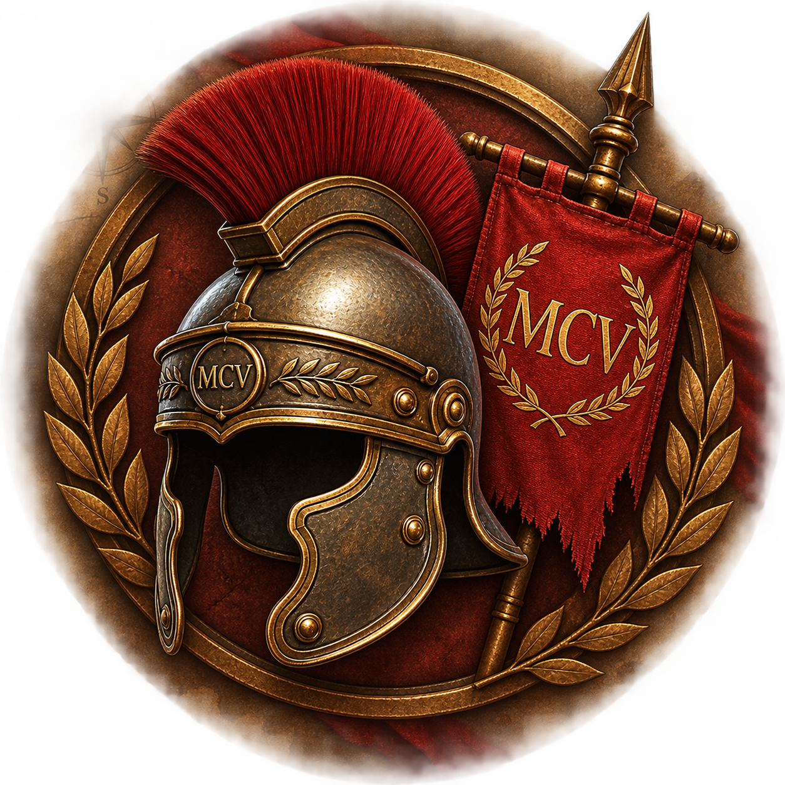

Digitale Expeditionsakte
MISSION FELSBERG
Das Vermächtnis des Marcus Cassius Varro
Bei Untersuchungen am Felsberg wurden Fragmente alter Aufzeichnungen entdeckt: Zeichen, Zahlen, verschlüsselte Botschaften und Hinweise auf verschiedene Orte im Felsenmeer.
Die Funde wurden fotografiert, untersucht und in dieser digitalen Expeditionsakte zusammengetragen.
ZUGRIFF: schrittweise Freigabe
Das Römische Reich hat seine größte Macht längst überschritten. Hoch oben am Felsberg liegen noch immer gewaltige Granitblöcke, an denen römische Steinmetze gearbeitet hatten.
Die Steinmetze fertigten mächtige Säulen für Tempel und andere Bauwerke.
Doch eine dieser Säulen war anders.
In ihrem Inneren entdeckten sie einen ungewöhnlichen Stein. Der Legende nach verlieh er seinem Besitzer unendliche Stärke.
Der Baumeister Marcus Cassius Varro erkannte die Macht des Steines – und die Gefahr, die von ihm ausgehen konnte.
Also versteckte er ihn tief im Felsenmeer und hinterließ Hinweise.
Zwölf Prüfungen. Zwölf Spuren.
Eure Ausrüstung
Digitale Expeditionsakte
Nach jeder bestandenen Prüfung wird ein neuer Teil von Varros Aufzeichnungen freigeschaltet.
Darin findet ihr die Koordinaten eures nächsten Zieles – oder einen Hinweis, mit dem ihr diese erst selbst entschlüsseln müsst.
Die Rätsel müsst ihr selbst lösen.
Haltet die Augen offen. Bleibt zusammen. Folgt den Spuren.
Archivdokument 01
Nachricht von Varro
An die Finder dieser Botschaft,
wenn ihr diese Zeilen lest, ist meine Zeit längst vergangen.
Mein Name ist Marcus Cassius Varro.
Ich bewahrte ein Geheimnis, das niemals in die falschen Hände geraten durfte.
Einen Stein von außergewöhnlicher Macht.
Man sagt, er verleihe demjenigen, der ihn besitzt, unendliche Stärke.
Deshalb versteckte ich ihn.
Wer ihn eines Tages findet, soll beweisen, dass er Mut, Verstand und Zusammenhalt besitzt.
Zwölf Prüfungen führen zu meinem Geheimnis.
Löst meine Rätsel. Entschlüsselt meine Zeichen. Folgt den Koordinaten. Und vor allem: Bleibt zusammen.
Möge euer Verstand stärker sein als der Stein.
MARCUS CASSIUS VARRO
Baumeister am Felsberg
Anno Domini CCCLXIV
Station I · Grieshammer Ruhe
Die Spuren der Steinmetze
Die Steinmetze mussten die gewaltigen Granitblöcke teilen.
Mit Hammer und Meißel schlugen sie Vertiefungen in den Stein. In diese Vertiefungen wurden Keile eingesetzt, um den Fels Stück für Stück zu spalten.
Wie nennt man diese Vertiefungen?
Spur bestätigt
Jetzt sucht selbst
Hinter der Hütte befinden sich echte Spuren der Steinbearbeitung.
Aufgabe: Sucht die Keillöcher hinter der Hütte und zählt sie genau.
Wie viele Keillöcher findet ihr?
Koordinatenrätsel
Die Zahl weist den Weg
Unvollständige Zielkoordinate
Ihr habt 18 Keillöcher gefunden.
Fügt nun die beiden Ziffern anstelle der Fragezeichen in eure Zielkoordinate ein und ihr wisst, wo ihr nach dem nächsten Hinweis suchen müsst.
Koordinate rekonstruiert
Nächstes Ziel
Zielkoordinate
Station II · Riesensarg
Das Zeichen am Stein
„Wer meinem Weg weiter folgen will, muss die Zeichen im Stein erkennen.
Sucht den behauenen Felsen – den sogenannten Riesensarg.
Auf ihm befindet sich eine auffällige Zahl. Sie stammt nicht aus meiner Zeit – und doch wird sie euch den Weg weisen.“
Welche Zahl findet ihr auf dem Stein?
Koordinatenrätsel
Die 24 weist den Weg
Unvollständige Zielkoordinate
Ihr habt die Zahl 24 gefunden.
Sehr gut. Denn diese braucht ihr wieder, um die nächste Koordinate zu ermitteln.
Multipliziert die Zahl 24 mit ihrem 8. Teil. Das Ergebnis sind die ersten beiden fehlenden Ziffern.
Die dritte Ziffer erhaltet ihr, wenn ihr die ganze Zahl 24 durch ihre zweite Ziffer teilt.
Koordinate rekonstruiert
Nächstes Ziel
Zielkoordinate Station III
Varros nächste Spur
Das Riesenschiff
Die schweren Steinblöcke vom Felsberg mussten einst zu weit entfernten Bauwerken transportiert werden. Viele von ihnen traten ihre Reise auf Schiffen an.
Vielleicht ist es deshalb kein Zufall, dass auch einer der mächtigsten Felsen hier einen besonderen Namen trägt und in vielen Karten eingezeichnet wurde:
Das Riesenschiff
Sucht diesen gewaltigen Stein.
Denn dort habe ich den nächsten Hinweis für euch verborgen.
MARCUS CASSIUS VARRO
Station III · Riesenschiff
Die Zeichen im Wald
Ihr seid am Riesenschiff angekommen. Doch der nächste Hinweis befindet sich nicht direkt hier.
Auf eurem Weg hierher seid ihr bereits ganz in seiner Nähe vorbeigekommen.
Sucht im Umkreis von etwa 20 Metern nach einem Baum, der ein altes Zeichen trägt.
Drei Buchstaben wurden in seine Rinde geritzt.
Merkt sie euch gut – doch Buchstaben allein werden euch nicht weiterbringen. Ihr müsst sie in Zahlen umwandeln.
Varros Spur
Der schmale Pfad
Dreht dem Riesenschiff den Rücken zu und haltet Ausschau nach einem schmalen Pfad, der den Berg hinunterführt.
Folgt diesem Pfad und begebt euch zu den Koordinaten 49.729856, 8.694642.
Dort wartet eure nächste Aufgabe.
MARCUS CASSIUS VARRO
Station IV · Die richtige Richtung
Varros Rätsel
Ihr habt den breiten Weg erreicht. Doch welchen Weg müsst ihr einschlagen?
Ich zeige euch den Weg,
obwohl ich keine Füße habe.
Ich kenne Norden, Süden, Osten und Westen.
Dieses Rätsel soll euch helfen, das richtige Werkzeug zu wählen und dann dem breiten Weg in Richtung Südosten zu folgen.
Haltet auf eurem Weg die Augen offen.
Irgendwo auf eurem Weg liegt eine Tonscherbe.
Sie wird euch den nächsten Hinweis geben.
Station V · Römische Zahlen
Die römischen Zahlen
Unvollständige Zielkoordinate
Habt ihr die Scherbe gefunden?
Dann entschlüsselt die beiden römischen Zahlen LXXXII und DCCCLXXXIV.
Ihr benötigt sie, um die fehlenden Stellen der nächsten Koordinate zu ergänzen.
Setzt das Ergebnis der ersten römischen Zahl in die erste Lücke und das Ergebnis der zweiten römischen Zahl in die zweite Lücke ein.
Koordinate rekonstruiert
Nächstes Ziel
Zielkoordinate Station VI
Station VI · Untergehende Sonne
Varros Wegweiser
Ihr habt die Kreuzung erreicht.
Drei Wege führen von hier weiter – doch nur einer folgt meiner Spur.
Mein Hinweis lautet:
Jeden Morgen steigt die Sonne im Osten empor.
Doch in welcher Himmelsrichtung verschwindet sie am Abend?
Varros nächste Spur
Die nächste Prüfung
Folgt dem Weg nach Westen und begebt euch zu den Koordinaten 49.729128, 8.697196.
Dort wartet die nächste Prüfung auf euch.
Station VII · Kraftvolles Element
Die Kraft im Holz
Meine Steinmetze konnten selbst mächtige Felsen spalten – und dafür brauchten sie nicht immer einen schweren Hammer.
Sie trieben trockenes Holz in die Spalten des Steins.
Doch erst eines der Elemente verlieh dem Holz seine Kraft.
Findet heraus, welches es war.
Ihr kennt die Antwort?
Dann nennt mir nicht das deutsche Wort.
Wie hieß es in der Sprache der Römer?
Prüfung bestanden
Nächstes Ziel
Zielkoordinate
Station VIII · Steinmauer
Die Zeichen der Steinmetze
Ihr steht nun an einem Ort, an dem die Arbeit der Steinmetze noch immer ihre Spuren hinterlassen hat.
Schaut euch die Mauern aus bearbeiteten Steinen zu beiden Seiten des Weges genau an.
Einer der Steine fällt besonders auf.
Der Stein, den ich meine, ist der oberste der linken Mauer, und ihr seid genau auf ihn zugelaufen.
In seiner Oberfläche findet ihr zahlreiche Kerben.
Zählt sie sorgfältig.
Multipliziert diese Zahl nun mit 3.
Das Ergebnis verrät euch, wie viele Schritte ihr von hier aus dem Weg weiter folgen müsst.
Station IX · Der besondere Stein
Der besondere Stein
Zählt gemeinsam eure Schritte und haltet die Augen offen.
Am Ende eures Marsches erwartet euch ein markanter Stein.
Was stellt er dar?
Gebt seinen Namen ein.
Koordinatenrätsel
Der Riesensessel weist den Weg
Unvollständige Zielkoordinate
Ihr habt den richtigen Namen herausgefunden.
Die Buchstaben seines Namens weisen euch den Weg.
Jeder Buchstabe besitzt einen Zahlenwert:
A = 1, B = 2, C = 3 … Z = 26
Addiert die Werte aller Buchstaben des Wortes RIESENSESSEL.
Ihr erhaltet eine dreistellige Zahl.
Setzt die zweite und dritte Ziffer eures Ergebnisses an den Anfang der Koordinate.
Die erste Ziffer kommt an die letzte freie Stelle.
Koordinate rekonstruiert
Nächstes Ziel
Zielkoordinate
Station X · Caesars Botschaft
Caesars Botschaft
Ihr habt meine Spur bis hierher verfolgt. Doch den Namen eures nächsten Zieles werde ich euch nicht einfach verraten.
Schon Caesars Boten wussten, wie man eine Nachricht vor fremden Augen verbirgt. Auch ich habe mich dieser Methode bedient.
Entschlüsselt meine Nachricht. Sie verrät euch, welchen mächtigen Stein ihr als Nächstes suchen müsst.
ULHVHQVDHXOH
Ziel entschlüsselt
Die Riesensäule
Richtig. Ihr habt den Namen meines nächsten Zieles entschlüsselt.
Sucht nun die Riesensäule.
Station XI · Die Riesensäule
Varros steinerner Koloss
Unvollständige Zielkoordinate
Ihr habt die Riesensäule gefunden.
Nun will ich wissen, wie genau ihr diesen gewaltigen Stein betrachtet.
Findet heraus, wie viel die Riesensäule ungefähr wiegt und wie lang sie ist.
Rundet beide Angaben auf ganze Zahlen.
Das Gewicht in Tonnen ergibt die ersten beiden fehlenden Ziffern der Koordinate.
Die Länge in Metern ergibt die letzte fehlende Ziffer.
Zielkoordinate
Das nächste Ziel
Zielkoordinate
Varros letzte Spur
Am Altarstein
Ihr habt den Altarstein erreicht.
Schon meine Steinmetze hinterließen an diesem mächtigen Felsen ihre Spuren. Mit Eisen, Sand und Wasser schnitten sie in den harten Stein.
Doch was ihr sucht, liegt nicht im Stein.
Ganz in der Nähe habe ich das verborgen, was all die Jahrhunderte niemand finden sollte.
Findet die Kiste mit meinem Vermächtnis.
Doch berührt oder öffnet sie noch nicht. Wenn ihr sie gefunden habt, lest zuerst meinen nächsten Auftrag.
Station XII · Das Vermächtnis
Varros letzte Prüfung
Ihr habt meine Kiste gefunden.
Doch eure Mission ist noch nicht erfüllt.
Der besondere Stein darin darf erst im Basislager geborgen werden.
Bringt die verschlossene Kiste gemeinsam dorthin.
Dabei dürft ihr die Kiste auf dem gesamten Weg nicht direkt mit euren Händen berühren.
Nutzt nur das, was ihr seit Beginn eurer Mission bei euch tragt.
Mission erfüllt
Das Vermächtnis des Varro
Ihr habt alle zwölf Prüfungen bestanden.
Ihr seid meinen Spuren gefolgt, habt meine Zeichen entschlüsselt und das Vermächtnis gemeinsam bis ins Basislager gebracht.
Eure Mission ist erfüllt.
Nun dürft ihr die Kiste öffnen und bergen, was ich vor so langer Zeit verborgen habe.
MARCUS CASSIUS VARRO